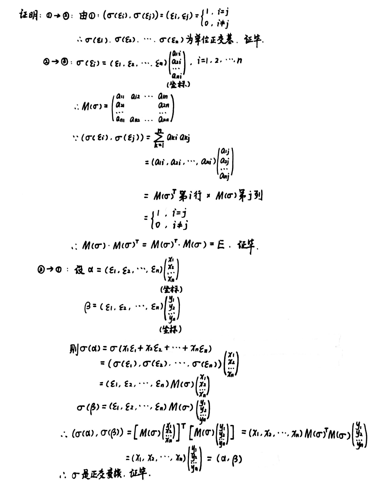
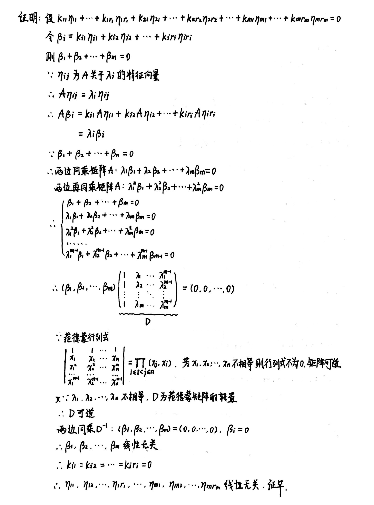
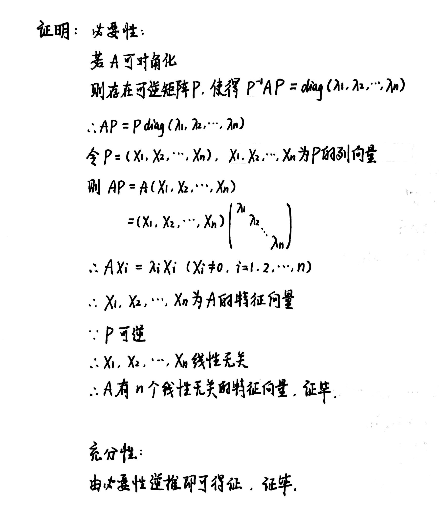
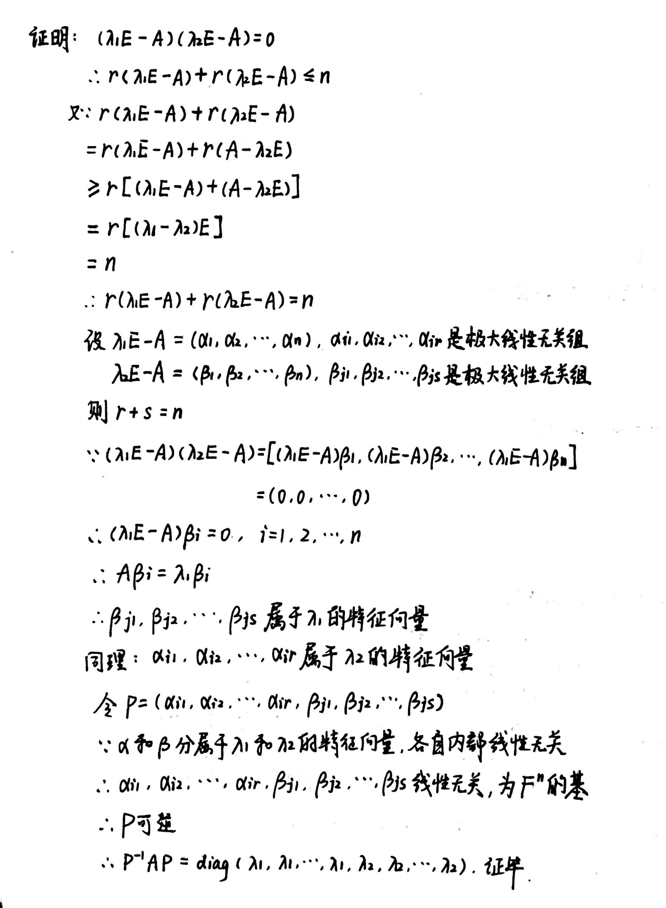
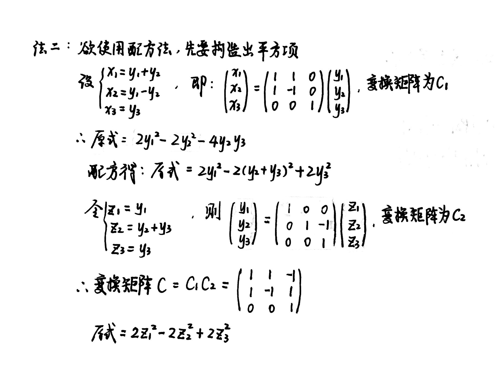
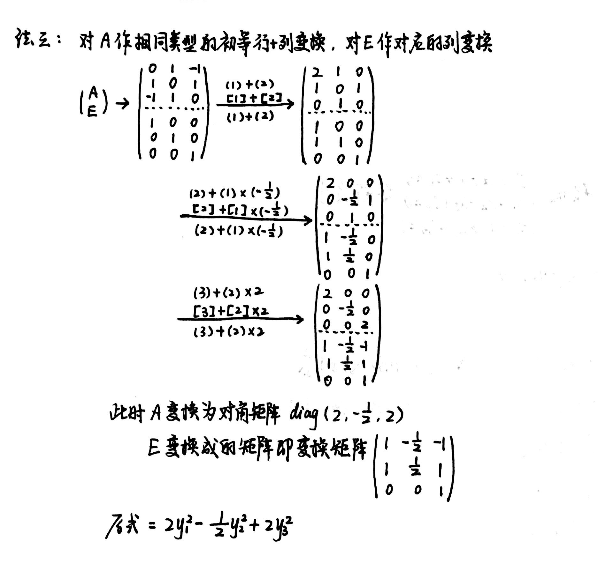

Chapter5 特征值、特征向量与矩阵的标准形
5.1 正交变换与正交矩阵
正交变换
欧氏空间$V(R)$的一个线性变换$\sigma$如果对$\forall \alpha,\beta\in V$满足：
$$(\sigma(\alpha),\sigma(\beta))=(\alpha,\beta)$$
即线性变换后内积不变，则称$\sigma$为正交变换.
等价条件：长度不变
$$|\sigma(\alpha)|=|\alpha|,~\forall \alpha\in V$$
性质一：夹角不变
若$\sigma$是正交变换，则
$$\langle \sigma(\alpha),\sigma(\beta )\rangle=\langle\alpha,\beta\rangle$$
性质二：单射
若$\sigma$是正交变换，则$\sigma$是单射，从而可逆。
等价关系：
若$\sigma\in(V,V)$，则下列命题等价：
① $\sigma$是正交变换
② 对任意一组单位正交基$\varepsilon_1,\varepsilon_2,···,\varepsilon_n$，$\sigma(\varepsilon_1),\sigma(\varepsilon_2),···,\sigma(\varepsilon_n)$也是单位正交基
③ 对任意一组单位正交基$\varepsilon_1,\varepsilon_2,···,\varepsilon_n$，满足
$$(\sigma(\varepsilon_1),\sigma(\varepsilon_2),···,\sigma(\varepsilon_n))=(\varepsilon_1,\varepsilon_2,···,\varepsilon_n)M(\sigma)$$
其中$M(\sigma)$满足
$$M(\sigma)^TM(\sigma)=M(\sigma)M(\sigma)^T=E$$
Proof

正交矩阵
定义一：
欧氏空间$V(R)$的正交变换$\sigma$关于$V$的单位正交基所对应的矩阵$A$称为正交矩阵。
$$\sigma(\varepsilon_1,\varepsilon_2,···,\varepsilon_n)=(\varepsilon_1,\varepsilon_2,···,\varepsilon_n)A$$
定义二：
满足
$$A^TA=E$$
的方阵$A$称为正交矩阵（或：如果$A$的列向量组是一组单位正交基）。
正交矩阵的性质：
（1）若$A$为正交矩阵，则$A^{-1}=A^T$，且$A^T$也是正交矩阵.
（2）若$A$为正交矩阵，则$|A|=±1$
（3）若$A,B$都是正交矩阵，则$AB$也是正交矩阵
第一类正交变换（旋转变换）：
$$|A|=1$$
第二类正交变换（镜面变换）：
$$|A|=-1$$
Q-R分解
若$A$为可逆实矩阵，则存在正交矩阵$Q$和主对角元为正数的上三角矩阵$R$，使得
$$A=QR$$
Proof

Hadamard不等式
$n$阶实矩阵$A$的行列式的绝对值小于等于$A$的$n$个列（行）向量长度的乘积，即
$$|detA|\leqslant \prod\limits_{i=1}^{n}|\alpha_i|$$
Proof

5.2 线性变换在不同基下的矩阵表示 相似矩阵
线性变换基所对应的矩阵关系
设线性变换$\sigma\in L(V,V)$，$B_1=\{\alpha_1,···,\alpha_n\}$和$B_2=\{\beta_1,···,\beta_n\}$是线性空间$V(F)$的两组基，基$B_1$变为基$B_2$的变换矩阵为$C$，如果$\sigma$在基$B_1$下的矩阵为$A$，则$\sigma$在基$B_2$下的矩阵为$C^{-1}AC$。
Proof

相似矩阵
若对于$A,B\in M_n(F)$，存在可逆矩阵$C\in M_n(F)$,使得
$$C^{-1}AC=B$$
则称$A$相似于$B$，记作$A\sim B$。
相似矩阵的性质(等价关系)：
（1）自反性：$A\sim A$
（2）对称性：若$A\sim B$，则$B\sim A$
（3）传递性：若$A_1\sim A_2$，$A_2\sim A_3$，则$A_1\sim A_3$
（4）若$A\sim B$，则
$$C^{-1}(AB)C=(C^{-1}AC)(C^{-1}BC)$$
（5）若$A\sim B$，则
$$C^{-1}(kA+tB)C=kC^{-1}AC+tC^{-1}BC$$
（6）若$A\sim B$，则$A^m\sim B^m$（$m$为正整数）
（7）若$A\sim B$，则$f(A)\sim f(B)$，其中
$$f(x)=a_mx^m+a_{m-1}x^{m-1}+···+a_1x+a_0$$
相似矩阵的特征：
相似矩阵有相同的特征多项式，从而有相同的特征值、迹和行列式，但特征向量不一定相同。
特征多项式相同则特征值相同，迹等于所有特征值之和，行列式等于所有特征值之积，因此相似矩阵有相同的迹，行列式，特征值。
相似矩阵来源于同一线性变换在不同基下的表示，因此它们的特征向量是线性变换的特征向量在不同基下的坐标，因此不一定相同。
5.3 特征值与特征向量
特征值和特征向量（线性变换）
设$\sigma\in L(V,V)$，若存在非零向量$\alpha\in V$和数$\lambda \in F$，使得
$$\sigma(\alpha)=\lambda \alpha$$
则称$\lambda$是$\sigma$的一个特征值，$\alpha$是$\sigma$的一个关于其特征值$\lambda$的特征向量。
所有$\sigma$的关于特征值$\lambda$的特征向量（加上零向量）组成的集合$V_\lambda$称为$\sigma$关于其特征值$\lambda$的特征子空间。
特征值和特征向量（矩阵）
引入：
已知
$$\sigma(\xi)=\lambda_0\xi$$
上式等价于
$$(\lambda_0I-\sigma)(\xi)=0$$
其中$I$为恒等变换
所以特征子空间$V_{\lambda_0}$为线性变换$(\lambda_0I-\sigma)$的核
因为$V_{\lambda_0}$中必有非零向量
所以
$$\dim(Ker(\lambda_0I-\sigma))\geqslant 1$$
由维数公式：
$$\dim(Ker(\lambda_0I-\sigma))+\dim(r(\lambda_0I-\sigma))=\dim(V)=n$$
得到
$$r(\lambda_0I-\sigma)\leqslant n-1$$
若$\sigma$关于基$B$的对应矩阵为$A$
则线性变换$(\lambda_0I-\sigma)$关于基$B$所对应的矩阵为$\lambda_0E-A$
所以
$$|\lambda_0E-A|=0$$
齐次线性方程组$(\lambda_0E-A)X=0$有非零解
非零解$X=(x_1,···,x_n)^T$所对应的非零向量
$$\xi=x_1e_1+···+x_ne_n\in Ker(\lambda_0I-\sigma)$$
$\xi$即为特征向量
综上：$\sigma$的特征值即为方程$|\lambda_0E-A|=0$的根，所对应的特征向量即为方程组$(\lambda_0E-A)X=0$的解所对应的向量。
定义：
设矩阵$A\in M_n(F)$，如果存在数$\lambda_0\in F$和非零向量$X\in F^n$，使得
$$AX=\lambda_0X$$
则称$\lambda_0$为矩阵$A$的一个特征值，称非零向量$X$为矩阵$A$的属于其特征值$\lambda_0$的特征向量，称$\lambda$的$n$次多项式$f(\lambda)=|\lambda E-A|$为矩阵$A$的特征多项式。
Example
例：已知$R^3$的线性变换$\sigma$关于$R^3$的某一组基$\{\alpha_1,\alpha_2,\alpha_3\}$所对应的矩阵为
$A=\begin{pmatrix}
{0}&{-2}&{-2}\\
{2}&{-4}&{-2}\\
{-2}&{2}&{0}
\end{pmatrix}$
求$\sigma$的特征值及相应的特征子空间。

定理1
若$\lambda_1,\lambda_2,···,\lambda_m$是$\sigma(A)$不同的特征值，$\eta_{i1},\eta_{i2},···,\eta_{ir_i}$是关于$\lambda_i$的线性无关的特征向量，则$\eta_{11},···,\eta_{1r_1},\eta_{21},···,\eta_{2r_2},···,\eta_{m1},···,\eta_{mr_m}$线性无关。
Proof

定理2
$n$维线性空间$V(F)$的线性变换$\sigma$的每个特征值$\lambda_i$的重数 (代数重数) 大于等于其特征子空间的维数 (几何重数)。
Proof

5.4 可对角化的条件 相似标准形
对角化
如果有限维线性空间$V(F)$的线性变换$\sigma$在某个基下对应的矩阵为对角阵，则称$\sigma$为可对角化的线性变换，与对角阵相似的矩阵$A$称为可对角化矩阵。
可对角化的条件
充要条件1：
$n$维线性空间$V(F)$的线性变换$\sigma$（或$A\in M_n(F)$）可对角化的充要条件为$\sigma$（或$A$）有$n$个线性无关的特征向量。
Proof

推论：
若$n$维线性变换$\sigma$有$n$个互不相同的特征值，则$\sigma$可对角化。
充要条件2：
$n$维线性空间$V(F)$的线性变换$\sigma$可对角化的充要条件为：$\sigma$的每个特征值的重数等于其特征子空间的维数，且重数和为$n$。
Proof
充分性：
若重数和为$n$且代数重数等于几何重数
则由定理1：$n$个特征向量线性无关
所以可对角化
必要性：
考虑反证法
若重数和小于$n$
则由定理2：维数和也小于$n$
所以$\sigma$的线性无关的特征向量的个数小于$n$
所以不可能对角化，矛盾
若重数和等于$n$但有一个特征值的重数大于其特征子空间的维数
则由定理2：维数和小于$n$
同样可推得矛盾
综上：证毕
Example
例：求证：若矩阵$A$满足$A^2-(\lambda_1+\lambda_2)A+\lambda_1\lambda_2E=0,\lambda_1\neq \lambda_2$，则$A$可对角化。 
解对角阵和变换矩阵的一般步骤
对于一个$n$阶可对角化矩阵$A$，求变换矩阵$P$，使得$P^{-1}AP=\Lambda$（对角阵），其解题步骤如下：
① 求$A$的所有特征值$\lambda_1,\lambda_2,···,\lambda_m$
② 求每个$\lambda$对应的特征子空间的基（基础解系）
③ 将所有的基向量（$n$个）依次按列排列成$n$阶矩阵，即为变换矩阵$P$
④ $\Lambda=diag(\lambda_1,···,\lambda_1,···,\lambda_m,···,\lambda_m)$
5.5 实对称矩阵的对角化
定理
定理一：
实对称矩阵的特征值都是实数。
定理二：
实对称矩阵属于不同特征值的特征向量是正交的。
定理三：
若$A$是一个$n$阶实对称矩阵，则存在$n$阶正交矩阵$Q$，使得
$$Q^{-1}AQ=diag(\lambda_1,\lambda_2,···,\lambda_n)$$
Example
例：设$A=\begin{pmatrix}
{2}&{2}&{-2}\\
{2}&{5}&{-4}\\
{-2}&{-4}&{5}
\end{pmatrix}$
求正交矩阵$Q$，使得$Q^{-1}AQ$为对角矩阵，并求出该对角矩阵。

5.6 双线性函数和二次型
双线性函数
如果$V\times V$到$F$上的映射$f$满足$\forall \alpha,\beta \in V,\forall k \in F:$
$$f(\alpha,k_1\beta_1 +k_2\beta_2)=k_1f(\alpha,\beta_1)+k_2f(\alpha ,\beta_2)$$
$$f(k_1\alpha_1+k_2\alpha_2,\beta)=k_1f(\alpha_1,\beta)+k_2f(\alpha_2,\beta)$$
即对于$\alpha,\beta$都是线性函数，则称$f$为双线性函数。（典例：欧氏空间的内积）
度量矩阵
设基
$$B=\{e_1,e_2,···,e_n\}$$
向量$\alpha$的坐标
$$X=(x_1,x_2,···,x_n)^T$$
向量$\beta$的坐标
$$Y=(y_1,y_2,···,y_n)^T$$
则
$$f(\alpha,\beta)=f(\sum\limits_{i=1}^{n}x_ie_i,\sum\limits_{j=1}^{n}y_je_j)=\sum\limits_{i=1}^{n}\sum\limits_{j=1}^{n}x_iy_jf(e_i,e_j)$$
令
$$a_{ij}=f(e_i,e_j)$$
则
$$f(\alpha,\beta)=\sum\limits_{i=1}^{n}x_i(a_{i1}y_1+a_{i2}y_2+···+a_{in}y_n)=(x_1,x_2,···,x_n)\begin{pmatrix}
a_{11}y_1+a_{12}y_2+···+a_{1n}y_n\\
a_{21}y_1+a_{22}y_2+···+a_{2n}y_n \\
······\\
a_{n1}y_1+a_{n2}y_2+···+a_{nn}y_n
\end{pmatrix}=(x_1,x_2,···,x_n)\begin{pmatrix}
a_{11}&a_{12}&···&a_{1n}\\
a_{21}&a_{22}&···&a_{2n}\\
···&&&···\\
a_{n1}&a_{n2}&···&a_{nn}
\end{pmatrix}
\begin{pmatrix}
y_1\\
y_2\\
···\\
y_n
\end{pmatrix}=X^TAY$$
其中矩阵$A$称为双线性函数$f(\alpha,\beta)$在基$B$下的度量矩阵。
相合
引入：
设双线性函数$f(\alpha,\beta)$在基$B_1$下的度量矩阵为$A$，在基$B_2$下的度量矩阵为$B$，若基$B_1$到基$B_2$的变换矩阵为$C$，则
$$B=C^TAC$$
定义：
若存在可逆矩阵$C$，使得
$$B=C^TAC$$
则称$n$阶矩阵$A$相合于$B$（记作$A\simeq B$）
即：双线性函数不同基下的度量矩阵是相合的。
二次型
$n$元二次齐次多项式
$$f(x_1,x_2,···,x_n)=a_{11}x_1^2+2a_{12}x_1x_2+···+2a_{1n}x_1x_n+a_{22}x_2^2+2a_{23}x_2x_3+···+2a_{2n}x_2x_n+···+a_{n-1,n-1}x_{n-1}^2+2a_{n-1,n}x_{n-1}x_{n}+a_{nn}x_n^2$$
叫做数域$F$上的二次型。
如果令$a_{ij}=a_{ji}$，则
$$f(x_1,x_2,···,x_n)=X^TAX$$
其中$X=(x_1,x_2,···，x_n)^T,A=(a_{ij})_{n\times n}$为实对称矩阵，即上述二次型所对应的矩阵。
$n$元二次型与$n$维线性空间上的对称双线性函数$f(\alpha,\alpha)$一一对应，也就是和对称矩阵一一对应（对称双线性函数的度量矩阵为对称矩阵）。
令$X=CY$，即对$X$作坐标变换，变换矩阵为$C$。
则
$$X^TAX=Y^T(C^TAC)Y$$
$C^TAC$为与$A$相合的另一度量矩阵。
如果
$$C^TAC=diag(d_1,d_2,···,d_n)$$
则
$$Y^T(C^TAC)Y=d_1y_1^2+d_2y_2^2+···+d_ny_n^2$$
是$f(\alpha,\alpha)$最简单的坐标表示式，即标准形。
对于任意一个实对称矩阵，都存在可逆矩阵$C$，使得
$$C^TAC=diag(d_1,d_2,···,d_n)$$
这个对角阵是$A$的相合标准形。
5.7 实二次型的标准形 实对称矩阵的相合标准形
主轴定理
对于任一个$n$元二次型
$$f(x_1,x_2,···,x_n)=X^TAX$$
都存在正交变换$X=QY$，使得
$$X^TAX=Y^T(Q^TAQ)Y=\lambda_1y_1^2+\lambda_2y_2^2+···+\lambda_ny_n^2$$
其中$\lambda_1,\lambda_2,···,\lambda_n$是实对称矩阵$A$的$n$个特征值，$Q$的$n$个列向量是$A$的$n$个单位正交的特征向量。
Example
例：三种方法将二次型化为不同的标准形
设三元二次齐次函数$f(x_1,x_2,x_3)=2x_1x_2-2x_1x_3+2x_2x_3$，将其化为标准形，并求坐标变换的变换矩阵$C$。
法一：主轴定理

法二：配方法

法三：初等变换

惯性指数与惯性定理
实对称矩阵$A$的相合标准形
$$diag=(1,···,1,-1,···,-1,0,···,0)$$
称为$A$的相合规范形。
$+1$的个数称为$A$的正惯性指数；$-1$的个数称为$A$的负惯性指数。
惯性定理：
实对称矩阵$A$的正负惯性指数是由$A$唯一确定的。
5.8 正定二次型与正定矩阵 其它有定二次型
正定二次型与正定矩阵
如果$n$元二次型对任意$X\neq 0$恒有
$$X^TAX>0$$
则该二次型称为正定二次型，矩阵$A$称为正定矩阵。
等价命题：
(1) $X^TAX$是正定二次型（$A$是正定矩阵）
(2) $A$的正惯性指数为$n$
(3) 存在可逆矩阵$P$，使得$A=P^TP$
(4) $A$的$n$个特征值都大于零
(5) $A$的$n$个顺序主子式（左上角主子式）都大于零
(6) 二次型化为$d_1x_1^2+d_2x_2^2+···+d_nx_n^2$的形式后$d_1,d_2,···,d_n$均大于零
推导命题：
若$A$为正定矩阵，则：
(1) $A^{-1}$也为正定矩阵
(2) $A$的主对角元均大于零
(3) $|A|=0$
(4) $A$的任何一个$k$阶主子式均大于零（(1)(2)为特殊情况）
(5) 存在正定矩阵$B$，使得$A=B^2$
其他二次型
若对于$\forall X\neq 0$
(1) $X^TAX<0$： 负定二次型
(2) $X^TAX\geqslant 0$：半正定二次型
(3) $X^TAX\leqslant 0$：半负定二次型
(4) 其余：不定二次型